天气晴朗
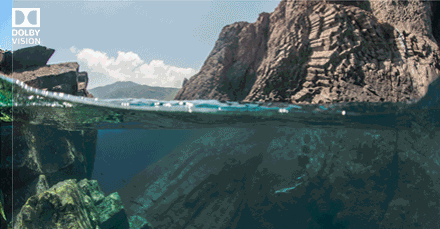
CompareKit
画质主观比较
数学之美
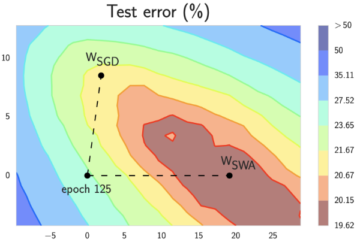
深度学习
advances in learning theory

流匹配 & 扩散模型
Flow Matching and Diffusion Models
扩散模型
from DDPM to DALLE2
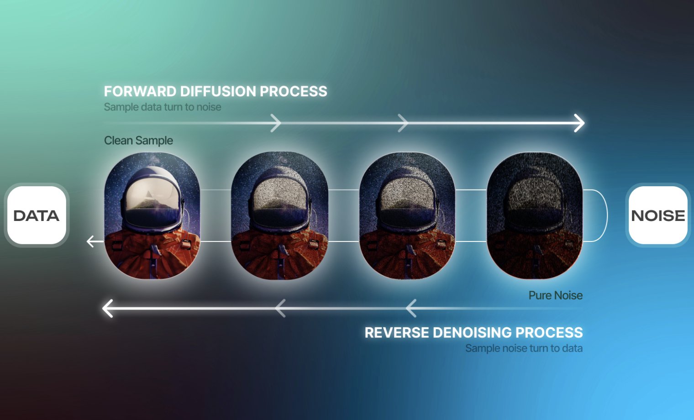
DDPM & Score-based
The Principles and Applications of Diffusion Models
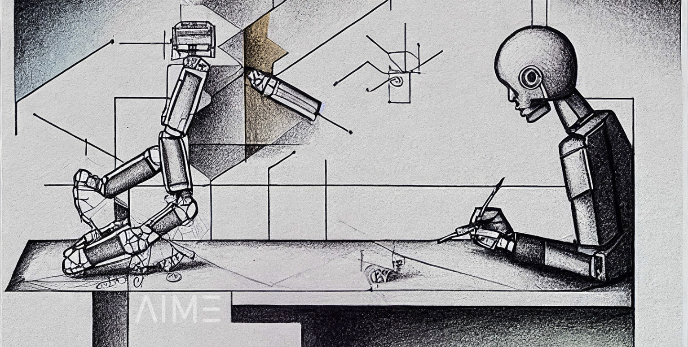
AIGC
AI-generated Content
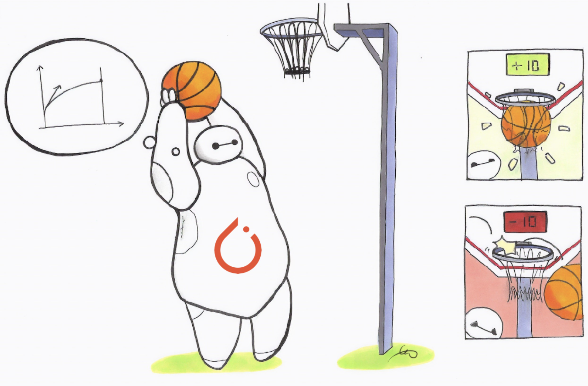
对比学习/稳定学习
new concepts in learning theory
非深度学习方法
for image enhancement
教育
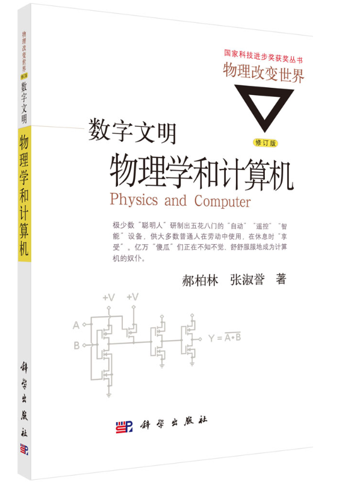
书单
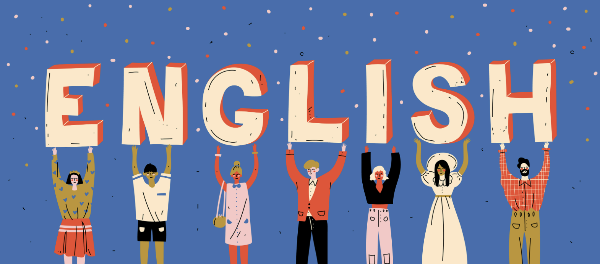
托福
计算机科学
渲染
Rendering: game & film
Statistical Learning
统计学习方法
Docker and K8s
划时代的开源项目
AI Agents
ComfyUI
Visual storytelling
算法刷题回顾
python刷题
Computer Science Courses
CS education.

Foundations of LLMs
色彩空间与像素格式
Color Space
视频编解码
Video Codec
Git Branching
技术小贴士
TensorRT
部署推理
torch・onnx・trt
技术栈
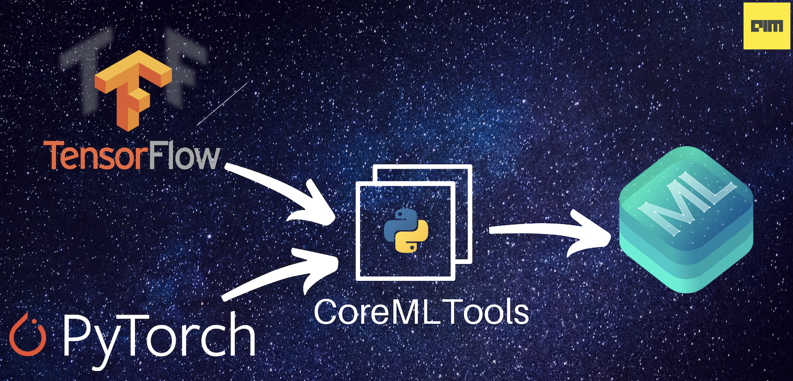
ML平台部署
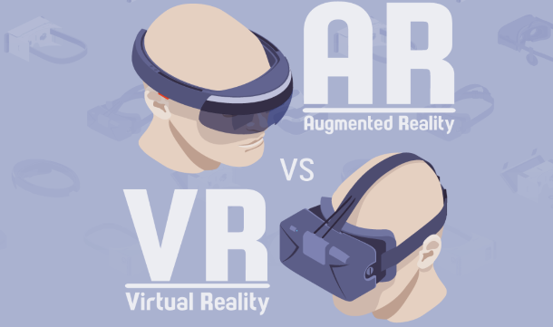
Virtual Reality
VMAF
Netflix, Inc.
机器学习与人工智能

炼丹指南
Troubleshooting Deep Learning
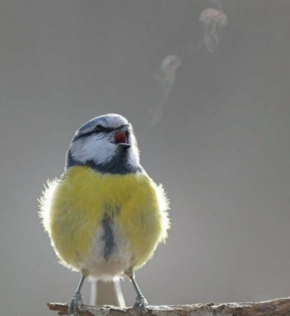
Awesome-Super-Resolution
reading list

Deconvolution and Checkerboard Artifacts
转载自Distill
PyTorch框架
供查阅
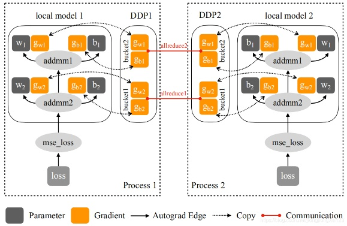
Distributed Training
practice
模型压缩
Model Compression and Acceleration
模型设计
卷积神经网络的复杂度分析
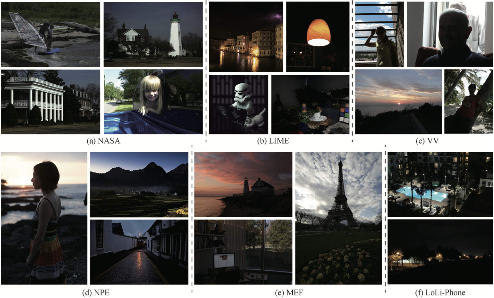
低光照增强与先验知识
LLIE and prior knowledge
随笔
ZOOM
AI & 视频协作
工具小汇
Toolbox
AI工具小汇
AI-research-tools
填坑记
配置的‘坑’与解决方案
C++
温故知新(上)
C++
温故知新(下)
论文推荐
Paper Reading List
秘塔AI
Mottos
1-善良大度，追求理想。
2-We are what we repeatedly do. Excellence,then,is not an act but a habit.
3-